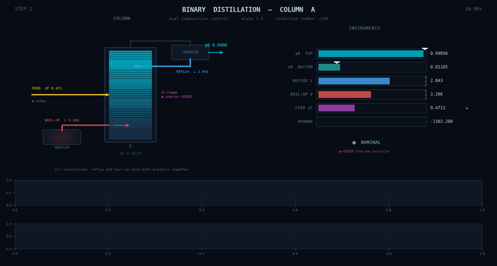

Distillation¶

Hold both product purities of a 40-tray binary distillation column (Skogestad's Column A) with reflux and boilup. The two purities move together far more easily than apart, which makes the plant ill-conditioned. Only the two products are analysed, plus one tray temperature: the tray compositions that hold the column's memory, and the drifting feed composition, are hidden. The reward scores both purities.
| Action space | Box((2,)), all actions in [-1, 1] |
| Observation space | Box((7,)) |
| Tracked variable(s) | yD (mole fraction), xB (mole fraction) |
| Episode length | 200 steps of 60 s (3.33 h) |
| Cite as | distillation-v3 |
| Physics | contract |
Action space¶
Actions are normalised to [-1, 1] and mapped onto the plant's real
actuator range inside the environment.
| # | meaning | min | max |
|---|---|---|---|
| 0 | L_raw | -1 | 1 |
| 1 | V_raw | -1 | 1 |
Observation space¶
7 values in the plant's own units. The space declares no bounds (it spans the float32 range), so scale them before training. The reward scores obs[0] against obs[4], obs[1] against obs[5].
| # | meaning |
|---|---|
| 0 | yD, light-component mole fraction in the distillate (top product) |
| 1 | xB, light-component mole fraction in the bottoms |
| 2 | reflux flow, fraction of its range (0 to 1) |
| 3 | boilup, fraction of its range (0 to 1) |
| 4 | target yD |
| 5 | target xB |
| 6 | T_15, stage 15's temperature (K) |
Rewards¶
See the environment's compute_reward.
Every environment in this suite scores on one contract. The reward is
minus the sum of three non-negative costs,
-(tracking_cost + running_cost + failure_cost). The running cost
charges consumption and the failure cost charges trips out of the
operating envelope. The reward is never positive, and its scale differs
by orders of magnitude between plants. Some plants are
priced in dollars or euros and the rest are dimensionless; the
per-plant summary says which.
See Reward shaping for how each cost is built.
Starting state¶
reset samples the initial condition and the target; state has 7 fields.
Episode end¶
Termination. None by default. Leaving the operating envelope trips the plant: the step that leaves it is charged the trip cost and sets info["tripped"] and info["trip_cost"], and the plant restarts as reset_env would while the episode clock keeps running. Episodic use is optional: with continuing = False the plant is lost and terminated is raised on that step instead. See Reward shaping.
Truncation. After 200 steps.
Baselines¶
Recorded over 10 seeds of the 200-step episode (see Baseline results). The reward is a cost, so a return closer to zero is better.
| controller | mean return | cost per step |
|---|---|---|
| PID | -8.299e+04 | 415 |
| MPC | -2.467e+04 | 123.4 |
The MPC beats the PID on 10 of 10 seeds and does not trip the plant on any of them.
Arguments¶
The scored configuration, which tg.make returns. A keyword argument changes one field, as in tg.make("distillation", max_steps_in_episode=...).
| parameter | value | unit |
|---|---|---|
delta_t |
1 | min |
max_steps_in_episode |
200 | steps |
alpha |
1.5 | - |
M_tray |
0.5 | kmol |
M_drum |
0.5 | kmol |
F |
1 | kmol/min |
zF_nominal |
0.5 | - |
qF |
1 | - |
zF_noise_std |
0.03 | - |
zF_min |
0.4 | - |
zF_max |
0.6 | - |
L_min |
2.3 | kmol/min |
L_max |
3.1 | kmol/min |
V_min |
2.8 | kmol/min |
V_max |
3.6 | kmol/min |
D_min |
0.1 | kmol/min |
D_max |
0.9 | kmol/min |
yD_floor |
0.9 | - |
xB_ceiling |
0.1 | - |
tracking_band |
0.02 | - |
precision_floor |
0.0001 | - |
boilup_cost_weight |
0 | - |
time_unit_seconds |
60 | s |
reward_version |
2 | - |
e_floor_top |
0.0001 | - |
e_floor_bottom |
0.0001 | - |
e_tol |
0 | - |
tracking_exponent |
2 | - |
c_hold |
3.282 | kmol/min |
running_weight |
1 | - |
failure_cost |
3.61e+06 | reward |
restart_steps |
240 | steps |
rho_floor_tracking |
8.53057e-05 | reward |
rho_floor |
8.53057e-05 | reward |